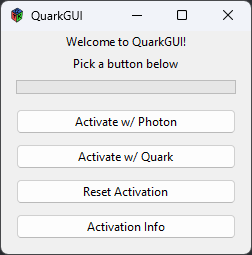
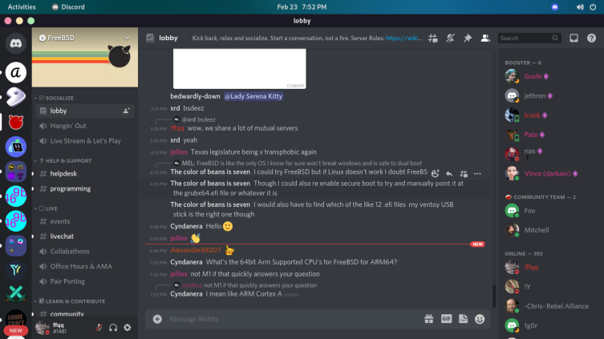

powerbash
powerbash is an intuitive bash prompt with git integration, error codes, and an elegant style. It features a convenient setup wizard to help you get set up.
 Installation Instructions
Installation Instructions
QuarkGUI is a graphical user interface for Quark, a Windows activator tool. With QuarkGUI, you can easily activate Windows with just a few clicks.
 Download QuarkGUIpowerbash is an intuitive bash prompt with git integration, error codes, and an elegant style. It features a convenient setup wizard to help you get set up.
Installation Instructions
Discord-BSD is a native Discord client for FreeBSD using Electron.
 Installation Instructions